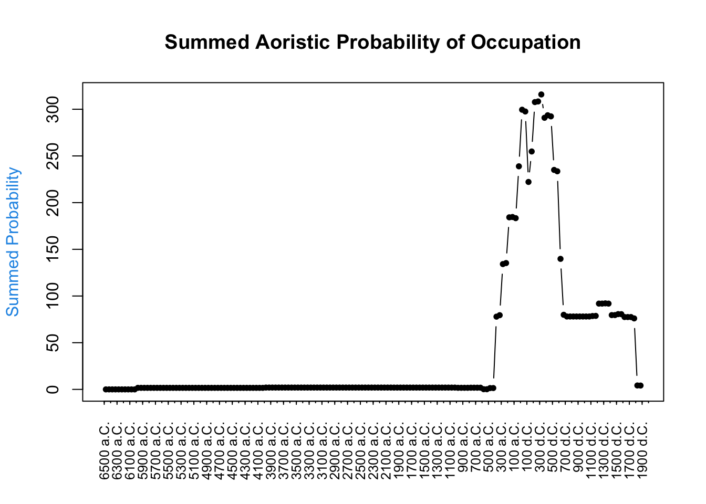

Villa Mascherone
In questa pagina si possono consultare le analisi preliminari effettuate sui campioni provenienti dalla ricognizione di Settembre-Ottobre 2024 in località Mascherone, Manfredonia (FG). Le indagini di superficie hanno riguardato l’area denominata come ‘Campo 62’, localizzata a circa 1.4 km dal perimetro dell’antica città di Siponto. Nel campo è stata predisposta una griglia regolare con 122 quadrati di dimensioni 20m x 20m, orientati secondo l’andamento della strada (viale degli Eucalipti) a N e il canneto divisorio lungo l’asse E del campo.


Inquadramento archeologico
L’area in questione era già di interesse archeologico in seguito ad una segnalazione del 1967 alla Arch. SAP di Foggia (R25/164 relazione del 4.3.1967). L’interpretazione di villa romana marittima, posta su una penisola in antichità circondata dalle acque su tre lati, è stata offerta da diversi autori (Danti 1999; Delano Smith e Morrison 1974; Delano Smith 1978; Lippolis 1984; Marin 1986; Mazzei 1999; Volpe 1990). Più recentemente, ricerche aerotopografiche hanno fornito una pianta più dettagliata dell’edificio (Ceraudo et al. 2011; Ceraudo 2011), su cui non sono state avanzate ipotesi riguardo la cronologia delle fasi di occupazione.
Cronologia di occupazione
La prima fase di analisi dei dati raccolti sul campo, basata su una distinzione preliminare in macroclassi ceramiche, è stata incentrata sulla ricostruzione delle fasi a maggiore intensità di occupazione. L’analisi aoristica (cumulativa), che ha tenuto in considerazione tutto il materiale ceramico rinvenuto all’interno del perimetro del Campo 62, mostra una lunga occupazione dell’area a partire dalla preistoria, in cui sono ben distinguibili tuttavia due fasi ad alta intensità insediativa in età romana. La prima fase di età repubblicana, a cui probabilmente si deve l’impianto della villa, mostra una cesura alla fine dell’età augustea. Una seconda fase di occupazione fra il IV e la prima metà del VI secolo d.C. è ipotizzabile, con una cesura piuttosto netta fra il VII e VIII secolo d.C.
La cronologia proposta è assolutamente preliminare e necessita rifiniture su più fronti:
- La cronologia delle singole classi ceramiche (Tabella 1) deve essere tarata sulla base dei materiali da siti editi noti prossimi a Siponto. Salapia?
- Lo studio dei materiali anforacei e ceramici permetterà di restringere il range cronologico e presumibilmente distinguere meglio le due fasi (o al contrario mostrare maggiore continuità).
- La cronologia può essere rifinita maggiormente attraverso un’indagine statistica più raffinata. Le analisi aoristiche sono un ottimo punto di partenza per la definizione delle fasi di vita di insediamenti non scavati, in cui non sono state effettuate analisi al radiocarbonio, e le cui uniche informazioni cronologiche derivano dalle cronotipologie dei reperti (Ashby e Bowers 2013; Johnson 2004). I singoli frammenti ceramici sono trattati come ‘blocchi temporali’, che vengono poi sommati per ottenere informazioni sull’intensità di occupazione. La logica è simile alle indagini paleodemografiche basate su datazioni C14: “più cose, più persone”. Tuttavia, la risoluzione cronologica offerta dalle cronotipologie è inferiore alle datazioni basate su radiocarbonio in quanto non ci consentono di misurare il grado di incertezza sulla cronologia proposta.
Il punto 3 è particolarmente interessante e complesso da studiare. Un’alternativa bayesiana ai metodi aoristici è stata recentemente proposta in Crema (2024), che offre una base su cui lavorare per passare dal grafico proposto qui di seguito (Fig. 1-2) a delle stime probabilistiche sulle singole fasi cronologiche (definite in blocchi di mezzo secolo).

Un approccio spazio-temporale
Definita la cronologia globale di occupazione della villa, la quadrettatura del campo offre spunti interessanti di analisi:
- Tutti i quadrati del Campo 62 hanno una cronologia coerente?
- È possibile proporre una divisione funzionale degli ambienti della villa in base al materiale rinvenuto?
- Interpolando i dati del campo con i campi contigui, è possibile individuare una pars rustica e delimitare l’estensione areale della villa con maggiore precisione?
Informazioni supplementari
Macroclassi cronotipologiche
| Materiale | Datazione_da | Datazione_a |
|---|---|---|
| laterizi_tegole | -399 | 1599 |
| tegola_romana_alette | 1 | 200 |
| tegola_pettinata | 501 | 700 |
| macine | NA | NA |
| scorie_metalliche | NA | NA |
| marmo | -200 | 600 |
| tessere_musive | -299 | 499 |
| ceramica_comune | -299 | 1700 |
| ceramica_comune_medievale | 1001 | 1500 |
| ceramica_protomaiolica | 1250 | 1400 |
| ceramica_dipinta | -399 | 400 |
| ceramica_RMR | 1201 | 1325 |
| ceramica_vernice_rossa_interna | -99 | 100 |
| ceramica_smaltata | 1500 | 1700 |
| ceramica_invetriata | 1100 | 1700 |
| ceramica_invetriata_verde | 1201 | 1400 |
| ceramica_invetriata_graffita | 1175 | 1599 |
| ceramica_invetriata_eta_moderna | 1450 | 1700 |
| pareti_sottili | 1 | 100 |
| ceramica_TSI | -50 | 150 |
| ceramica_TSA | 1 | 650 |
| ceramica_TSA_A | 1 | 299 |
| ceramica_TSA_C | 300 | 499 |
| ceramica_TSA_D | 300 | 650 |
| ceramica_eastern_sigillata | -50 | 150 |
| ceramica_CAC | 1 | 299 |
| ceramica_LRCW | 301 | 699 |
| ceramica_fuoco | -200 | 1700 |
| ceramica_ICW | 201 | 399 |
| ceramica_fuoco_invetriata | 1200 | 1599 |
| ceramica_lucerna | -200 | 1700 |
| ceramica_dolia_GC | -700 | 1000 |
| ceramica_impasto | -6000 | -700 |
| ceramica_vernice_nera | -400 | -100 |
| ceramica_amphoras | -400 | 1599 |
| ceramica_geometrica | -800 | -300 |
| ceramica_pasta_grigia | -150 | -50 |
| ceramica_non_identificata | -2000 | 1800 |